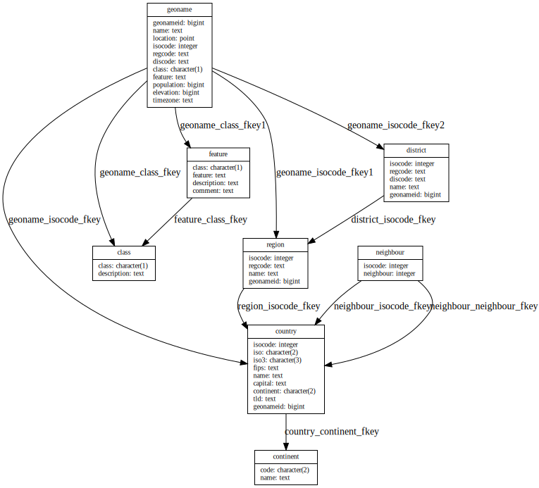

I’ve recently finished reading The Art of PostgreSQL (see my
review). I took a lot of
notes, mostly to help me read in a more focused manner; I thought it’d
be nice to polish and publish them.
I first wanted to call this “What I’ve learned from TAOP”, but it
also includes things I already knew, so there.
Parts I and II: Preface
and Introduction
I didn’t take any notes for these—they’re a very general introduction
to the book, a first application example, and why you should use
Postgres. Got it.
Part III: Writing SQL Queries
Chapter 4: Business Logic
Isolation levels (read uncommitted, read committed etc.); there’s
more about this later
Stored procedure: create or replace function
Lateral joins: iterate over each row of a result and evaluate
sub-query with that row as a parameter, see this
article and the “top-n artist by genre” query
Prefer SQL for stored procedures over PLpgSQL
Chapter 5: A Small
Application
Variables in psql:
Set with \set n 1
From the command line: psql --variable 'n=1' (or
--set or -v)
Referred to using :n
Python library that lets you store SQL queries in separate files: anosql
limit :n seems to eat the blank, have to use
limit :n for some reason
Chapter 6: The SQL
REPL—An Interactive Setup
This chapter was great, I’ve totally overhauled my psql configuration
file after reading it and the whole man page. My
favourites:
Unicode border style: \pset linestyle unicode
Flag for transaction in prompt: %x in the prompt
string
\e opens the last command in an editor!
-P format=html, or asciidoc,
latex, …
\set ECHO_HIDDEN true shows the queries run by slash
commands
Chapter 7: SQL is Code
This chapter basically says that all the ususal software engineering
practices apply to SQL code as well: use a consistent style, use tests,
use meaningful names, and so on. The style guide promoted by the author
is roughly
Do not use uppercase SQL keywords because it’s a leftover from
ancient times
Right-align top-level keywords
Use meaningful names, for example to indicate the meaning of a
table in a self-join:
from artistjoin track on track.name= artist.namejoin album on album.albumid = track.albumidjoin artist inspired on inspired.artistid = album.artistid
That example also demonstrates the style in action, and until the end
of the book, I could not get myself to like it.
Other advice:
Use meaningful aliases, such as artist and
inspired instead of a1 and
a2
group by rollup(...): creates permutations for each
column in the grouping sets
group by cube(...): includes partial
permutations
Common table expressions:with alias as (...)
Repeating strings: repeat(string text, number int),
e.g., build a histogram with
repeat(text'■', 10)
Can’t nest aggregate queries, but you can chain common table
expressions
SQL alternative to PostgreSQL’s distinct on: use
group by without aggregates
Set difference: except (useful for regression
testing)
Chapter 16: Understanding
Nulls
Any boolean comparison involving null has value
null, even null = null
null is “we don’t know”
“Pretend SQL doesn’t implement three-valued logic”:
is [not] distinct from
Chapter 17:
Understanding Window Functions
I definitely still don’t understand window functions.
over (order by x) is short for
over (orderby x rowsbetweenunboundedprecedingandcurrentrow)
over () sees the whole set of rows
Window functions happen after the where
clause
over (partition by column) is a frame showing
peer rows with the same value for column
All aggregate functions can be used against a window
frame
The book got the fastest lap speed wrong; it’s a velocity, not a
time, so should be ordered like this:
over(orderby fastestlapspeed::numericdesc)
The author even comments on how it’s counterintuitive that the
fastest lap seems to be almost inversely correlated to doing well in the
race.
Re-using a window definition:
select surname,lag(code, 1) over w as"prev",lead(code, 1) over w as"next"from resultsjoin drivers using(driverid)where raceid =890window w as (orderby position)
Divide into groups: ntile() function
Chapter 18:
Understanding Relations and Joins
A table is really a relation, and you can query the
“composite data type”:
select relation from relation
create table really creates a new data type
Part V: Data Types
Chapter 20:
Serialization and Deserialization
Storing and retrieving values out of and back into memory isn’t a
problem for which you need a database system.
Chapter 21: Some Relational
Theory
A tuple is a list of attributes
A relation is a list of tuples that all share the same list
of attribute domains: names and data type
There’s a time literal called allballs, which is
00:00:00.00 UTC
There is a table that determines which function is run depending on
the operand types on both sides of =
You can add your own as extensions
Chapter 22: PostgreSQL Data
Types
Get a sample from a table: tablesample; for example:
select*fromtabletablesamplebernoulli(10);
gets a sample where each row has a chance of 10% to appear in the
output.
Boolean
Aggregates for booleans: bool_and,
bool_or
Use is, not = for comparison to
booleans
Remember that nulls are skipped, so use
is [not] distinct from when required
Character and Text
Regular expression support with main operator ~
Split field into separate table:
regex_split_to_table
Split into array: regex_split_to_array
There’s lots of advanced support for documents, text search queries,
ranking, highlighting etc.
Server Encoding and Client
Encoding
Never use SQL_ASCII
If a client doesn’t understand UTF8, you can have
Postgres do conversion on the fly
Numbers
All combinations of operand types have to be supported, so Postgres
has only few numeric types (no unsigned, for example).
Sequences
Declaring a column SERIAL is a shorthand for
create sequence, default nextval() and
owned by
Notice that you can exhaust a sequence; serial is 4
bytes (but internally 8, just like bigserial)
UUIDs
Storing as UUID type makes sense: 16 bytes instead of 37 byte
strings
Always use timestamps with time zones (no storage
penalty!)
Time zones aren’t stored; input and output timezones are converted
to, similar to client_encoding
now() within a transaction always returns the same
time
If you don’t specify a time zone, the local time zone is
assumed
Easiest way to enter a timestamp: ISO, like
'2019-01-08 04:05:06' or
'2019-01-08 04:05:06+02'
Intervals
Intervals are aware of month lengths when attached to a date, so use
them.
Date/Time Processing and
Querying
Function to calculate percentiles: percentile_cont
Ironically, the query to show commits for a specific date shows
different results depending on the time zone of the querying system
Another useful function: date_trunc truncates to a
specified precision
Network Address Types
There are proper data types for IP addresses: inet for
hosts and networks, cidr for networks.
Ranges
Unique to Postgres
Provides concurrent safe check against overlapping ranges
Constraint written using exclude using gist; requires
btree_gist extension
Query with validity @> date '2017-05-18', where
@> is the “contains” operator and validity
is a daterange column
Chapter 23: Denormalized
Data Types
Arrays
Rule of thumb for when to use them: when they’re mostly used as a
whole, example: user defined tags
Index on an array column: using gin
Search for element in array:
where hashtags @> array['#job']
Use unnest() to turn an array into a relation
But if you need a lot of unnest, you probably should be
using a lookup table
Composite Types
For advanced cases not covered in this book.
XML
You can write XSLT stored procedures in Postgres, see PL/XSLT.
JSON
json is a leftover with no processing, only form
validation
You almost certainly want jsonb
Check if array extra contains array [2,4]:
where extra @> '[2,4]'
Enum
Mostly added to make it easier to migrate from MySQL; proper design
would use a reference table with foreign key
Enums make a globally consistent state hard to maintain
Matter of taste (and the author clearly implies “bad taste”)
Part VI: Data Modeling
Chapter 26: Object
Relational Mapping
Database modeling and object modeling are separate and both
required.
Chapter 27: Tooling
for Database Modeling
Schema should be versioned as well as source code of DB schema
psql and visual tools; focused on schema itself here,
not visual tools
Databases are separated environments that can’t interact
with each other
If you want to interact with existing models, use a schema
instead
Testing new schema: write as SQL script with explicit transaction,
finish with testing queries and a rollback
Seems to use singular for table names: article,
comment (but doesn’t mention that as a guideline)
Test out main anticipated queries on dummy data
Chapter 28: Normalization
This was a very useful chapter. It helped me better understand
primary keys, when to use surrogate keys and to think about constraints
on what would be natural keys.
Normalization: organizing columns and tables to reduce redundancy
and improve integrity, while simplifying database design
Fewer tables aren’t better or simpler
The interface to connect our data structures are the join
operations
Different levels; models often reach BCNF (Boyce-Codd
Normal Form) or 4NF (4th Normal Form)
Insufficiently normalized tables can suffer from database anomalies
(update, insertion, deletion)
Primary keys have non-null attributes that are unique; they
allow implementing 1NF
Natural keys prevent duplicate entries and consist of
columns with business meaning
Surrogate keys are artificially generated, but allow
violations of 1NF
Compromise: surrogate key as primary key for easy referencing from
other tables, but not null and unique
constraints on what would be natural primary key attributes
Foreign keys reference keys known to be unique in
the target table, so they must have either a unique or a
primary key constraint
Not null constraint disallows unspecified entries
check constraints allow conditions on fields, like
check (price > 0)
create domain allows to create a custom type to
validate, e.g., against a regex
Exclusion constraints are like generalized unique
constraints with a custom operator choice, see ranges
Chapter 29: Practical
Use Case: Geonames
In this chapter, the author goes through a poorly laid out schema and
normalizes it. I used a tool to visualize the schema after the
normalization:

Normalized schema
It would have been interesting to see the schema before as well, but
I realized that too late.
Chapter 30: Modelization
Anti-Patterns
The discussion about UUIDs as primary keys was teased a few times
before this chapter, but I’m not convinced by the recommendation; while
sequences are easier to handle and guarantee that there won’t be
collisions, you wouldn’t want to leak them in externally visible data.
This wasn’t addressed in this chapter, though.
Anti-patterns:
Sticking all your data into a non-descript value text
field (entity attribute values)
Multiple values per column, like comma separated data
UUIDs: strong theoretical guarantee against collision—but sequences
guarantee it
Chapter 31: Denormalization
Fully normalized schemas have a high number of tables and references
between them
Sometimes, we want to relax normalization, but this should be done
with care
Before optimizing performance with denormalization, be sure you have
benchmarked your queries and there is no other way
You might have to repeat data; make sure there is an integrated
cache invalidation mechanism
Materialized views: way to cache something that is read
much more often than updated; create view, then
create materialized view; to invalidate cache,
refresh materialized view
History table to keep track of changes where the record
structure might change over time: use a data jsonb column
and stick data into it with row_to_json()
Use a range as a validity period, see currency example
Multiple values per attribute with an array (supports
search and indexing)
Sparse matrix: use jsonb
Partitioning: supported as of Postgres 10, but
Indexes must be added to each partition separately
No way to create primary key, unique constraint or exclusion
constraint spanning all partitions
on conflict results in errors
An update that moves a row into a different partition
fails
Can’t even reach first normal form
Chapter 32: Not Only SQL
Schemaless in PostgreSQL: stick everything into a jsonb
field
GIN indexing supports indexing such a field
Part VII:
Data Manipulation and Concurrency Control
Chapter 34: Another Small
Application
Remember that 2NF means “non-key attributes depend on the key”;
example of violation: Tweet table has column with profile
information
Transitive dependencies violate 3NF, example: country and place
depend on location
Chapter 35: Insert, Update,
Delete
In Postgres, insert, update and delete commands accept a
returning clause (which I now use all the time!)
They also support joins, but each statement does it
differently
Insert
insert into: values is accepted
wherever select is expected and takes multiple rows; for
many rows, consider copy instead
Pull a regex match out of a string:
substring(users.bio from'in love with #?(.*).')
Update
Allows replacing existing values while other users are
concurrently working with the database
Use primary key plus real value if primary is synthetic:
where userid =17and uname ='Puck'
This gives us both typo protection and better concurrency
behaviour.
returning in a delete statement can be used to
summarize what has been deleted
Joins for delete statements: using
A row is what a query sees, a tuple what is on
disk; a single row can exist as multiple tuples on disk
Delete all rows: truncate—faster (deletes on disk),
still MVCC compliant
Delete almost everything: faster to create new table and select
into it from old table with
createtable new_name (likenameincludingall)
insert, then drop table name and
altertable new_name renametoname
The only problem is that drop table and
alter table require an access exclusive lock; delete and
vacuum can run in the middle of concurrent traffic.
Chapter 36: Isolation and
Locking
Postgres takes care of concurrency and leaves some control of it to
the user
Use case for isolation: online backups with
pg_dump to take a snapshot; isolation level repeatable
read (up to Postgres 9.0) / serializable (9.1 onward)
Four isolation levels, with serializable being the most strict
Phenomena which are prohibited at various levels:
Dirty read—isolation level read uncommitted (not
implemented by Postgres)